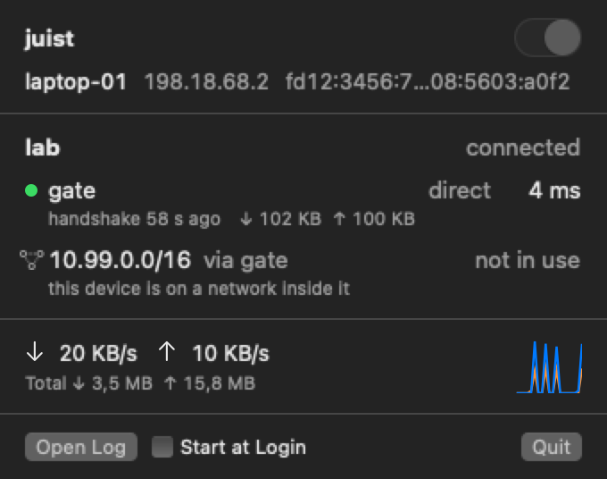
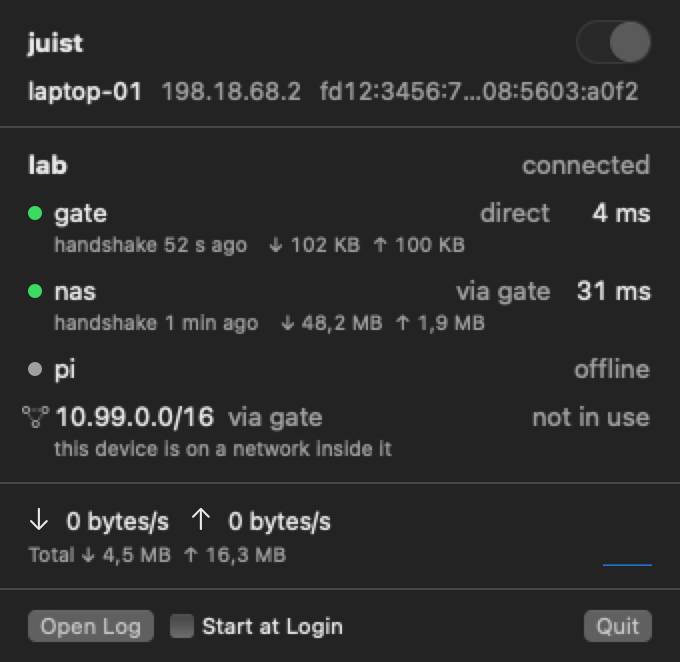
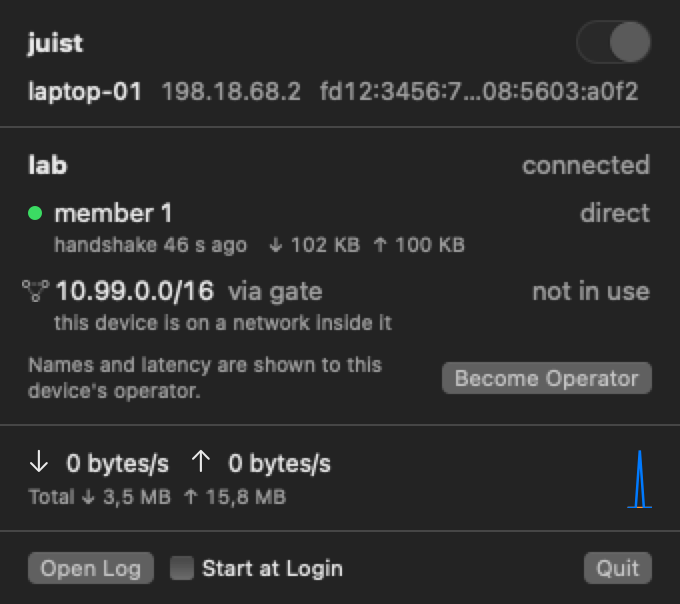
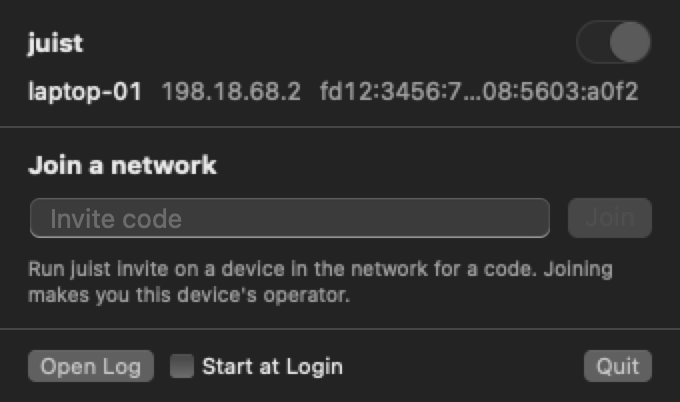

juist, with a switch.
A juist menu bar app for the Mac, and an OPNsense plugin.

It used to be two shell scripts.
And a password every time I wanted the VPN off.
- -
sudo launchctl bootstrap system io.juist.juistd.plist - -
sudo launchctl bootout system/io.juist.juistd - -
juist status # is it even up? - +a switch; one admin prompt, the first time
- +every device: direct or relayed, handshake, ms
- +join with the code from juist invite
What the window shows
Everything comes from juistd’s own socket.

Direct, relayed, gone
Relayed devices name their relay. Offline ones just say offline. A juist subnet you’re already on shows as not in use, so your LAN keeps working.

Member 1, no ping
juistd hides names from users who aren’t its operator. Become Operator asks for your password once and fixes it.

Paste the invite code
Run juist invite on any member, paste the code here. You also become this Mac’s operator.
What runs where
Turning it off unregisters the daemon. It stays off across reboots.
| Thing | What it is |
|---|---|
| juistd | Runs as root from inside Priel.app, kept alive by launchd, up before login. |
| /var/db/juist | Keys and membership. Kept through off, upgrades and deleting the app. |
| /etc/priel/juistd.flags | Extra juistd flags, say --no-dht --no-stun. Root-owned or it’s ignored. |
| 0x23me/juist | juist plus the three commits this needs. Read them, they’re short. |
The firewall end
As root on the firewall.
$ pkg add https://github.com/nning/juist/releases/download/v0.27.1/juist-freebsd15-amd64.pkg$ pkg add https://github.com/0x23me/priel/releases/latest/download/os-juist-0.1-FreeBSD-15-amd64.pkgFreeBSD 14 box: take the FreeBSD-14 one.- VPN › juist
- Service, ports, relay.
- A juist interface group
- Rules go on it, as for any VPN.
- Invites from the GUI
- Needs an admin key on the firewall.
Early, and unofficial.
It runs on one Mac and one firewall so far. Not made by juist’s author, so file bugs with Priel, not juist.